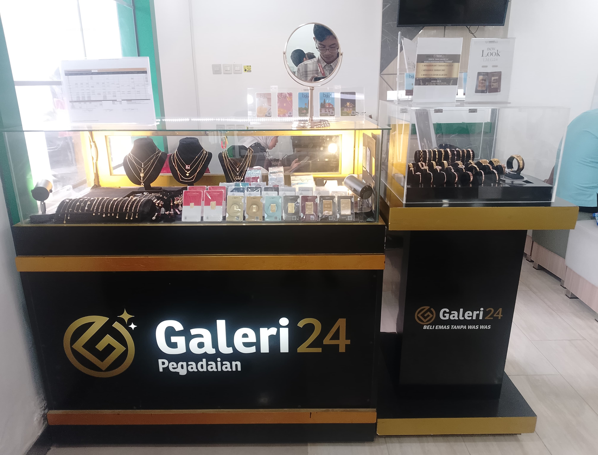
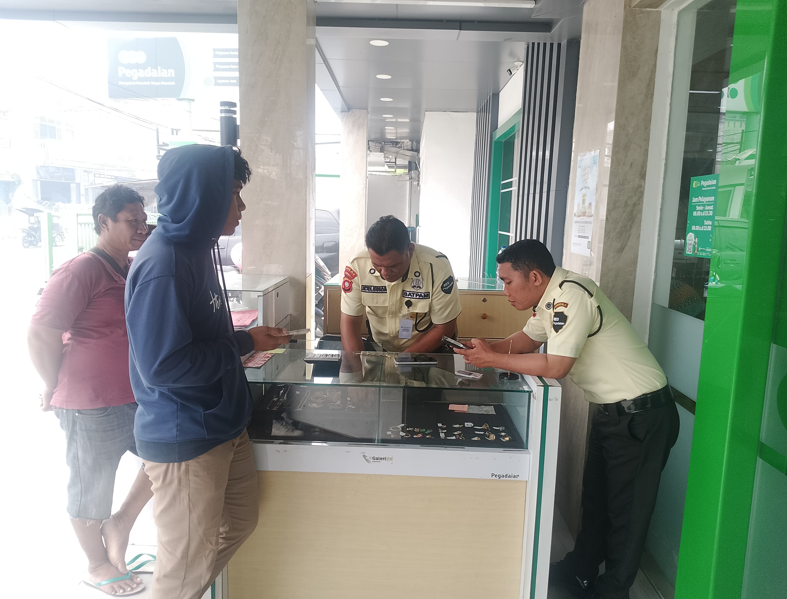
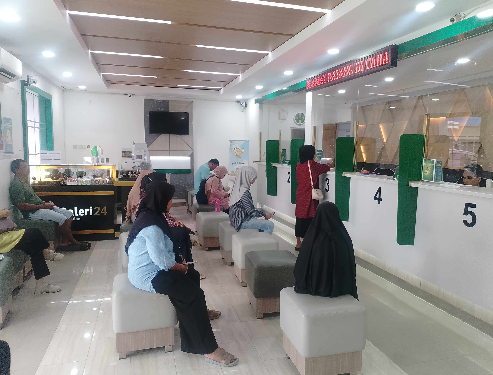

Di Pegadaian Gorontalo Cabang Sentral
Tentang: Pegadaian adalah lembaga keuangan yang secara resmi mempunyai izin untuk melaksanakan kegiatan operasionalnya berupa pembiayaan kredit kepada masyarakat dalam bentuk penyaluran dana dengan jumlah yang relatif kecil maupun jumlah yang besar atas dasar gadai, juga sebagai jasa titipan, jasa taksiran.
Tujuan: Tujuan pegadaian adalah untuk memberikan solusi keuangan kepada masyarakat dengan menawarkan layanan gadai barang sebagai jaminan.
Sejarah Singkat: Pegadaian resmi didirikan pada 1 April 1901 oleh pemerintah Hindia Belanda di Batavia (sekarang Jakarta). Lembaga ini dibentuk untuk memberikan pinjaman kepada masyarakat dengan barang sebagai jaminan, khususnya bagi mereka yang kesulitan mengakses kredit melalui saluran formal lainnya. Tujuan utamanya adalah untuk membantu rakyat miskin dalam mendapatkan dana dengan cara yang aman dan terjamin. Setelah kemerdekaan Indonesia pada 1945, Pegadaian mengalami transformasi dan pengembangan untuk menyesuaikan diri dengan kebutuhan masyarakat. Saat ini, Pegadaian terus berkembang dan menawarkan berbagai produk dan layanan keuangan, termasuk pinjaman, pembelian emas, dan layanan investasi, serta berfungsi sebagai lembaga penting dalam sistem keuangan Indonesia.
Moto: Mengatasi Masalah Tanpa Masalah


